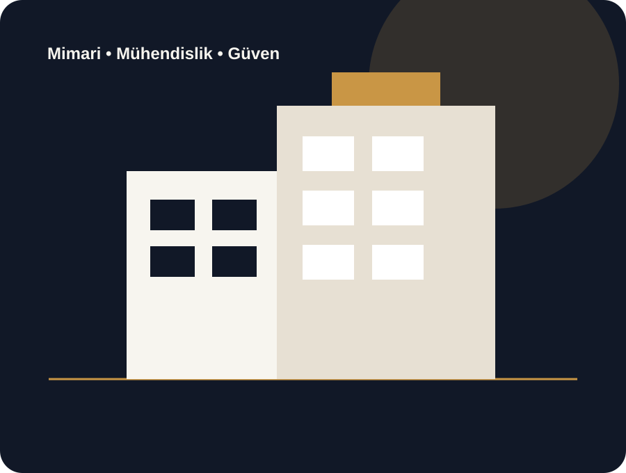

Konut Projeleri
Villa, rezidans ve toplu konut projelerinde çağdaş mimari ve güçlü mühendislik.
Konut, ticari yapı ve taahhüt projelerinde sağlam mühendisliği zamansız mimariyle birleştiriyoruz. Planlamadan teslimata kadar şeffaf, ölçülebilir ve güvenilir süreç.

Arsa değerlendirmesinden mimari uygulamaya, kaba yapıdan anahtar teslime kadar temel inşaat hizmetleri tek çatı altında.
Villa, rezidans ve toplu konut projelerinde çağdaş mimari ve güçlü mühendislik.
Ofis, mağaza, otel ve karma kullanım projelerinde marka değerini destekleyen uygulamalar.
Keşif, bütçe, uygulama ve teslim süreçlerini tek sorumluluk altında yöneten çözüm.

Alanya • 42 daire • 8.900 m²

Antalya • Ticari • 12.400 m²

Alanya • 12 villa • 6.200 m²
Bütçe disiplini, malzeme kalitesi ve uygulama detaylarını aynı standardın parçası olarak ele alıyoruz.
Uygulanabilir takvim ve maliyet planı.
İlerleme ve kritik karar noktalarında açık iletişim.
Malzeme seçiminden saha kontrolüne ölçülebilir kalite.
Bölgesel ihtiyaçları mimari ve mühendislik kararlarına dahil eden yaklaşım.
Arsanız, yatırım fikriniz veya mevcut projeniz için bize ulaşın.